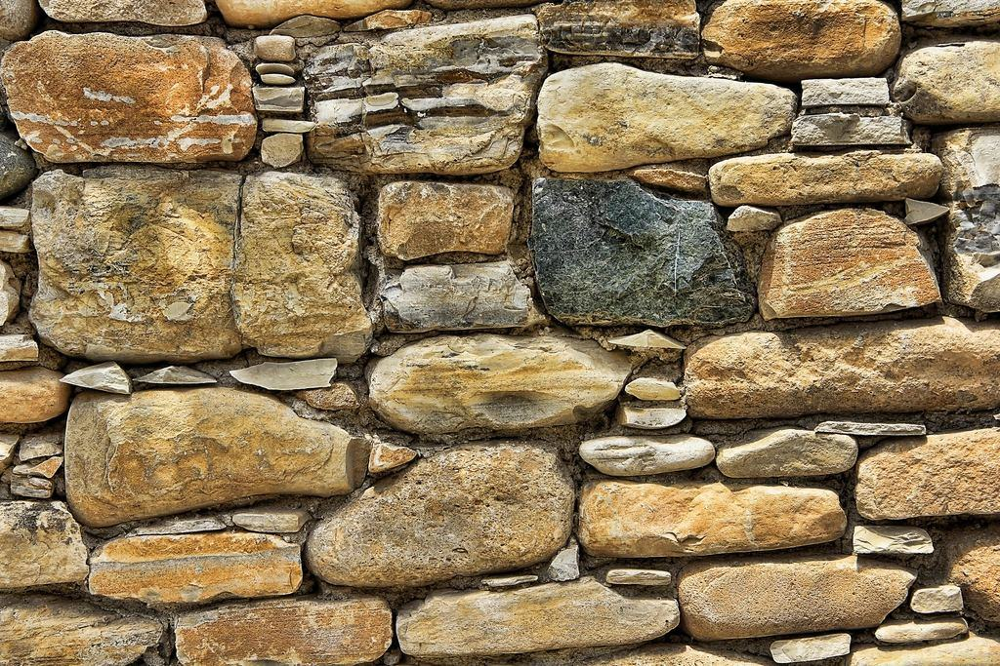
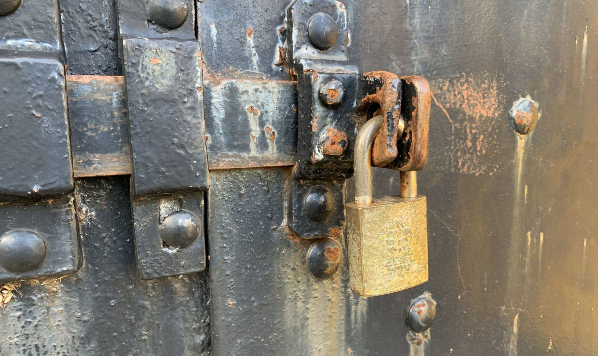
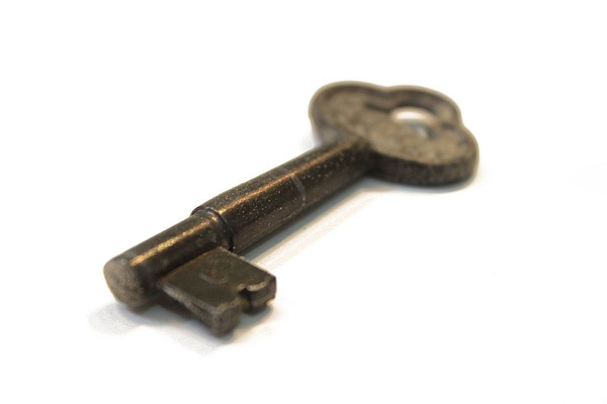

Referenser
Ett urval av uppdrag vi har utfört.
- 2026

Packhus på Strandgatan
Lås från 1760-talet renoverat och nyckel smidd efter avtryck.
- 2025

Fårösunds Stugby
Gästerna får koden i bokningsbekräftelsen och städarna sin egen.
- 2025

Katthammarsviks fiskeläge
Fjorton sjöbodar med syrafasta hänglås och smidda regler.
- 2025

Kalkstensgård i Lärbro
Nya lås, regelskydd och fönsterlås på en gård från 1840.
- 2024
Pensionat vid Klinten
Kodlås som passar husets gamla dörrar och byts per gäst.
- 2026

Höstrundan 2026
Genomgång av 214 hus inför vintern, klar i mitten av november.
Sommargäster och bofasta
Kristina och Per Ö. · Fårö”Vi bor i Uppsala och huset på Fårö står tomt åtta månader. Nu får vi bilder efter höstrundan och vet att allt är låst.”
Henrik V. · Visby innerstad”Byggnadsantikvarien godkände förstärkningen direkt, eftersom ingenting syntes utifrån.”
Lotta G. · Hemse”Jag ringde i juli, mitt i turistsäsongen, och fick hjälp samma dag. De har verkligen någon reserverad för oss som bor här.”